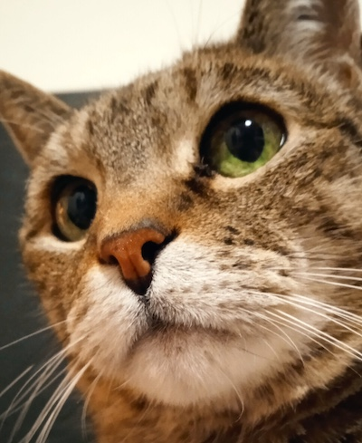
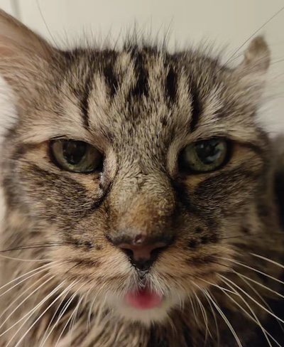

Ningyuan Sun
Hi, there. My name is Ningyuan Sun. I am a post-doctoral researcher at the University of Luxembourg. I started my Ph.D. in the same university from 2019 and successfuly defended my thesis in 2023. My research aims to understand the rationale behind people's decisions on delegating critical tasks to embodied AI, especially when combined with immersive media technologies like virtual and augmented realities.
Before hitting on the Ph.D. journey, I obtained a Master degree in Computer Science at the University of Birmingham (U.K.) and worked as a software engineer at the Inspur Group (China).
I am a cat lover. Below are my cats.

Poppi

Dami (deceased)